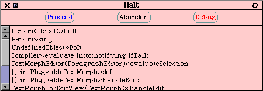
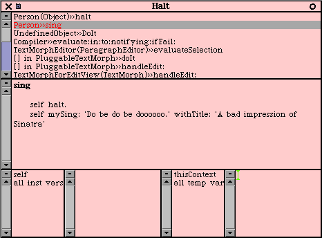

|
|
 |
ScopedBrowser openBrowserForArticle4
You'll notice that there are seven categories available,
including MakingSmalltalk-Article2. If the Person class exists,
it should be in this category. Left-click on the Person
class, then middle-click>Remove. You'll get a confirmation
dialog, click yes in this. You'll see now that the category
MakingSmalltalk-Article2
is empty.
Now, to first declare our Person class, in
the ScopedBrowser, left click on the MakingSmalltalk-Article4
category, you'll see the code pane displays a nice class template for you.
It's pretty straightforward:
Object subclass: #NameOfClassDon't worry about what a pool dictionary or class variable is, just edit this template such that it looks like:
instanceVariableNames: 'instVarName1 instVarName2'
classVariableNames: 'ClassVarName1 ClassVarName2'
poolDictionaries: ''
category: 'MakingSmalltalk-Article4'
Object subclass: #PersonThen middle-click>accept. You'll notice that the Person class has been added to the article 4 category. Now lets add a method, the first method we discussed in article 2 was sing.Right-click>new category...>new... in the method categories pane, and type in: Singing as the method category name, then click on the Accept button. You'll notice that the code pane gives you a nice method template:
instanceVariableNames: ''
classVariableNames: ''
poolDictionaries: ''
category: 'MakingSmalltalk-Article4'
message selector and argument namesCopy over this method template with our sing method, then right-click>accept.
"comment stating purpose of message"| temporary variable names |
statements
singYou'll notice that the sing method appears in the method category Singing. You can now go to a workspace, and do: Person new sing, and the bad impression will appear. For the read-along folks, the browser looks like:
(Workspace new contents: 'Do be do be doooooo.') openLabel: 'A bad impression of Sinatra'.
Now the next method we discussed was sing:, and
it could take a parameter: 'MaryHadALittleLamb'. You can see the
obvious difficulty with our first sing method - the song and label are
hard-coded along with the activity that we're doing. It'd make more
sense to have one method that knows the activity we're doing (singing),
and be able to have it accept parameters from various methods to simplify/reuse
our code. That way, if we need to change how the singing is done
in the future, there are less spots to update. Lets make a new method
(remember, we're denoting private methods with a 'my' prefix) that isolates
how we're doing the singing from what is being sang:
[ex1c]
mySing: someLyrics withTitle: aTitleThen, lets refactor our first sing method to reuse this private method, just copy right over the sing method or edit the text directly and accept it:
(Workspace new contents: someLyrics) openLabel: aTitle
singNote that we still have the song lyrics and title hard coded in the sing public method, so they're not directly accessible by other objects or methods of Person, but it is better than it originally was. We'll show a better way to organize your code when we do our next song, and illustrate how factoring out the song lyrics can be useful. With this in mind, lets create a lyrics method for our next song:
self mySing: 'Do be do be doooooo.' withTitle: 'A bad impression of Sinatra'
maryHadALittleLambLyricsNow we can add our sing: method that reuses our private mySing:withTitle: method. It has some very simple logic that defaults to our bad impression if we don't understand what is being requested to sing. Note: when we ask aSong if it's equal to 'MaryHadALittleLamb', a boolean object is returned (true or false), and then we ask the boolean object if it's true or if it's false.
^'Mary had a little lamb, little lamb, little lamb, Mary had a little lamb whose fleece was white as snow.'
sing: aSongRemember, as soon as you add a method, you can execute it if you like, since no compile-n-link-n-run cycle is needed. Finally, lets add our last public singing method, which is similar to the above method:
aSong = 'MaryHadALittleLamb'
ifTrue: [self mySing: self maryHadALittleLambLyrics withTitle: 'Mary had a little lamb']
ifFalse: [self sing].
sing: aSong andDoIt: anAdjectiveWhich assumes another private method, which builds on our first private method. You can see how having the lyrics factored out into a separate method is useful, as we can access them as needed to sing loudly (uppercase) or quietly (lowercase).
aSong = 'MaryHadALittleLamb'
ifTrue: [self mySing: self maryHadALittleLambLyrics inManner: anAdjective withTitle: 'Mary had a little lamb']
ifFalse: [self sing].
mySing: someLyrics inManner: anAdjective withTitle: aTitleI'm leaving out the whatIsMyHeight method, as it's just more of the same of what we've covered. Note the simple conditional logic that we've used here. This is something that can be avoided by programming methods like double dispatching, but that's beyond the scope of this article. Avoiding conditional logic is often cited as one of the benefits of OO programming. To illustrate, image that we have 30 different songs that we needed to sing, this would lead us to have 30 different ifTrue statements, or a CASE statement (most Smalltalks don't even have a CASE statement) with 30 cases. Then if we needed to add 5 more songs, we'd need to track down all the places where we used the 30 cases and add our additional 5; chances are there's more than one place where there are these 30 cases, and you'll eventually have problems keeping all the cases in sync. For simplicity though, we're using conditional logic for illustrative purposes.
"Using simple logic here for illustrative purposes - if the adjective is not 'loudly' or 'quietly' just ignore how we're being asked to sing"
| tmpLyrics |
anAdjective = 'loudly'
ifTrue: [tmpLyrics := someLyrics asUppercase].
anAdjective = 'quietly'
ifTrue: [tmpLyrics := someLyrics asLowercase].
self mySing: tmpLyrics withTitle: aTitle
self halt.
self mySing: 'Do be do be doooooo.' withTitle:
'A bad impression of Sinatra'.
Then ask your person to sing by doing: Person
new sing, you'll see the debugger:

Click on the Debug button, and click on the 2nd method on the
method stack. For the read-along folks, you'll see:

Now, you can delete the self halt., then
middle-click>accept
- at this point your code is updated such that any requests to the sing
method get the new version. Now you can continue execution by moving your
pointer over the top pane, and
middle-click>proceed
This can be a very powerful way of programming/debugging
your code. Remember, the debugger is your friend - many new
Smalltalkers don't use the debugger to it's full advantage because the
compile-link-run cycle is so ingrained. Following this model, you
use the debugger to step in and over code until you see the problem, then
you close the debugger and go back to your browser to make the code update,
then try running the code again. Why not just make the code update
while you're in the debugger and continue on your merry way!? Another
very powerful technique can be to insert a breakpoint in a troublesome
part of the code, then manually change the live objects to simulate various
conditions to help you debug (scribbling temp values for different scenarios
on scaps of paper can become a thing of the past). Sometimes it is
necessary to begin execution from the start because the context will be
so different, but more times than not you can just fix things right in
your debugging session.
Base Classes
The base Smalltalk classes
that you start a clean image with. For example, Object, Boolean,
Magnitude, Stream, etc. Though you can (and sometimes need to) do
base class changes, it's generally not advised as it's very easy to mess
up the image or to break forwards compatibility.
Namespace
A namespace is much what
it sounds like - a finite space that names can be defined and identified
in. For example, if you're writing a program and you wanted to define
a class called Object, you'd be out of luck as the class Object already
exists. If you were able to define a second class called Object, how would
the computer know the difference between the two? In most Smalltalks
there is a single namespace (VisualWorks Smalltalk is the notable exception).
Namespace collision
When two companies/groups/people
try to name thier classes with the same name, or define methods off of
a class with the same name. To help avoid namespace collision not
only within your own projects, but from other companies like third party
vendors, it's a common practice to prefix your classes with some acronym,
for example, if you work for MegaCorp you might prefix all your classes
with 'Mc'
Refactor
To change/update/reorganize
your code to make it (hopefully ;-) cleaner, faster, more robust.
Refactoring typically moves around responsibilities and/or makes larger
methods into smaller methods.
[2] Well, this isn't technically true. As in many other parts
of this series I'm making a simplifying statement/assumption. To
be more clear, for the purposes of beginners it simplifies things to consider
Object the root object of Smalltalk.
To be more precise, Smalltalk has an elegant method for bootstrapping
its class hierarchy that's rooted in meta classes and circular definition.
If you don't understand the next sentence, don't worry because typically
it's nothing you need worry about for regular Smalltalking. Briefly,
in Squeak there's actually a class called ProtoObject that is the super
class of Object, and ProtoObject inherits from nil - the sole instance
of UndefinedObject, which inherits from Object. Other Smalltalk flavours
have something similar to this.